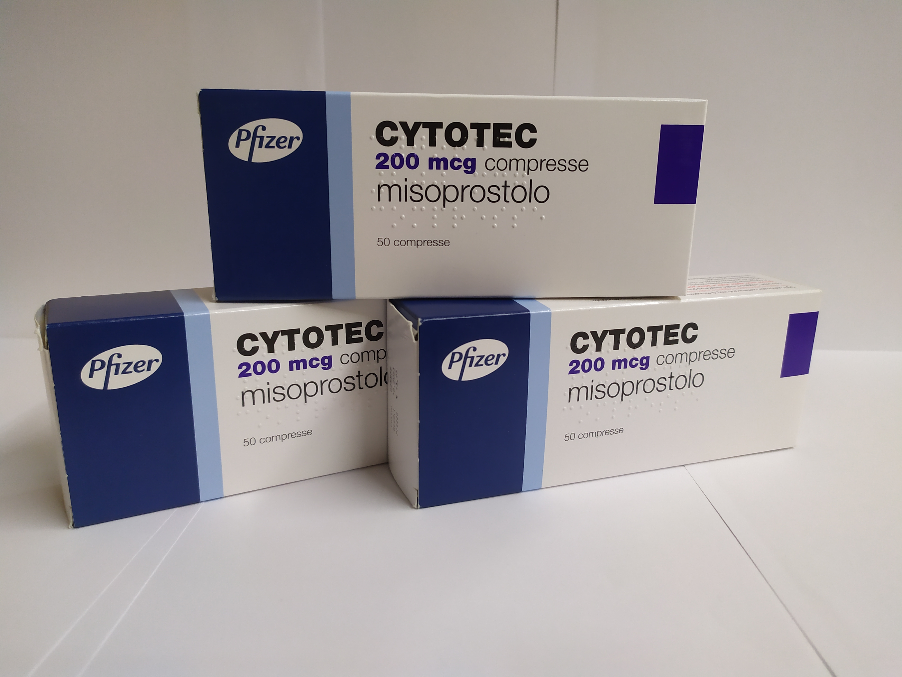

Сайтотек / Cytotec / Цитотек
Виробник: Італія

Контактна інформація:
Ціна: 750 грн/уп.
В наявності
Виробник: Італія
Ціна: 750 грн/уп.
В наявності
Для того,щоб купити Сайтотек на фарміталь, вам потрібно лише зателефонувати до нашого менеджера.
Доставка Cytotec здійснюється транспортними компаніями, терміни виконання замовлення обумовлюються менеджером Фармітал. Ви можете замовити Сайтотек,Цитотек у містах: Одеса, Херсон, Чернігів, Сєверодонецьк, Бердянськ, Бровари, Дніпро, Вінниця, Київ, Слов'янськ, Полтава, Краматорськ, Біла Церква, Кам'янське, Маріуполь, Чернівці, Олександрія, Кам'янець-Подільський, Львів, Запоріжжя, Кропивницький, Житомир, Івано-Франківськ, Суми, Черкаси, Костянтинівка, Мелітополь, Кривий Ріг, Рівне, Луцьк, Нікополь, Павлоград, Ужгород, Кременчук, Лисичанськ, Хмельницький, Тернопіль, Харків, Миколаїв, а також в інших населених пунктах України.
Також дізнайтесь більше про Сайтотек за посиланням: cytotec.com.ua
Діючою речовиною сайтотек: Мізопростол
Сайтотек випускається в таблетованій формі. Фасовка: 50 табл. / Упаковка.
Діюча речовина таблеток Сайтотек є синтезованим аналогом виробляється організмом простагландину Е1. Дана молекула сприяє посиленню захисних властивостей слизової шлунково-кишкового тракту за рахунок стимуляції вироблення слизу залозистими клітинами шлунка, посилення природної секреції бікарбонатних молекул.
Це збільшує стійкість слизової шлунково-кишкового тракту, не дає агресивним компонентам з їжі, алкогольних напоїв, терапевтичних препаратів завдавати шкоди клітинам, які формують слизову оболонку шлунково-кишкового тракту.
Сайтотек надає наступні ефекти:
- викликає нейтралізацію кислоти за рахунок посилення синтезу бікарбонатів;
- захищає стінки шлунка від агресивних молекул за рахунок збільшення вироблення слизу, поліпшення її якісного складу;
- покращує кровопостачання слизової шлунково-кишкового тракту із стимуляцією регенеративних процесів.
Молекула мезопростола знижує продукцію пепсинових молекул. Терапевтична дія настає через 30 хвилин після прийому ліків, діє на протязі 180 хвилин. Мезопростол провокує скорочення міометрія, посилюючи інтенсивність скорочення.
Пігулка Сайтотек приймається перорально(через рот). Показано вживати лікарську форму безпосередньо з їжею, після їжі і перед відходом до сну.
Для терапії виразкових ушкоджень шлунково-кишкового тракту, гастритів з ерозіями слизової добова доза становить 0,8 мг з поділом її на 2-4 прийоми.
З метою профілактики розвитку виразкової поразки шлунково-кишкового тракту призначається 0,4-0,8 мг / добу з поділом дози на 2-4 прийоми.
При необхідності терапії препаратами групи НПЗЗ показано приймати Сайтотек під час всього лікування.
У період загострення виразки дванадцятипалої кишки препарат слід приймати 1 місяць.
Через місяць робиться ендоскопія. При виявленні неповного рубцювання курс продовжується ще на місяць.
Застосування таблеток Сайтотек може супроводжуватися:
Не перевищувати дозування, встановлену вашим лікарем! У разі виникнення будь-яких побічних ефектів негайно звернутися до лікаря.
Сайтотек не призначається при:
Обережність необхідна при призначенні таблеток Сайтотек при:
Застосування препарату в дозах, які перевищують терапевтичні, може супроводжуватися такою симптоматикою:
При виникненні будь-якої з перерахованих вище реакцій негайно звернутися до лікаря!
Суворо дотримуватися дозування, визначену лікарем.
Температура зберігання таблеток Сайтотек - до 30 градусів Цельсія. Термін придатності препарату - 3 роки.